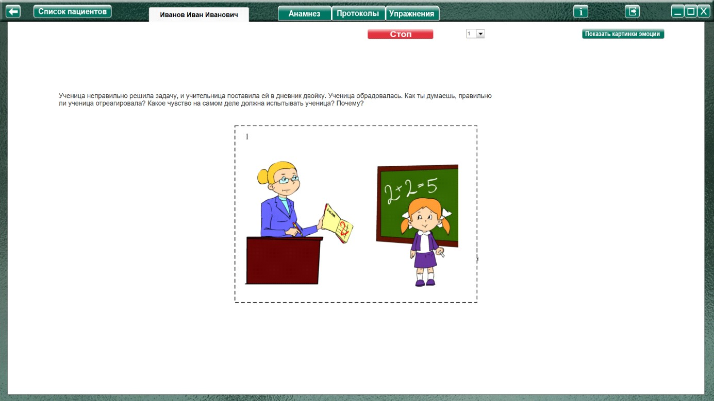
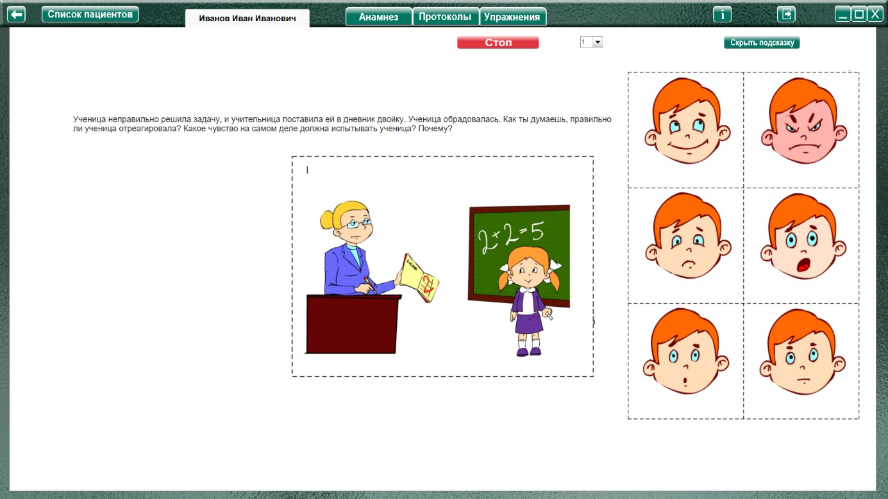

Методика «Изучение способности определять
эмоциональные состояния людей в школьной ситуации» (Фатихова Л.Ф.)
Методика «Изучение способности определять
эмоциональные состояния людей в школьной ситуации» (Фатихова Л.Ф.) описание
Процедура проведения.
Ребенку предлагается картинка с изображением конфликтной школьной ситуации, в которой один из партнеров испытывает неадекватное этой ситуации эмоциональное состояние, и читается
соответствующий рассказ. Затем ребенка просят определить, правильно ли реагирует персонаж на ситуацию и какое на самом деле чувство он должен испытывать.
Анализируемые показатели и нормативы выполнения
Оценка результатов производится по каждой ситуации (картинке и рассказу) отдельно.
4 балла (высокий уровень) – дается за правильный и развернутый ответ по каждой ситуации. Ребенок понимает несоответствие переживаемого персонажем эмоционального состояния ситуации, выделяет это состояние, обозначая его соответствующим словом, заменяет его соответствующим ситуации эмоциональным состояниям, объясняет причины последнего исходя
из знаний и представлений о ситуации.
3 балла (средний уровень) – ребенок понимает несоответствие эмоционального состояния персонажа ситуации, определяет соответствующее ситуации состояние при предъявлении картинок с изображением лиц с основными эмоциональными состояниями, может подобрать соответствующую картинку с эмоциональным состоянием, однако самостоятельно не дает объяснения причин возникновения данного эмоционального состояния.
2 балла (уровень ниже среднего) – ребенок понимает несоответствие эмоционального состояния персонажа ситуации, способен выделить соответствующее ситуации состояние при предъявлении картинок с изображением лиц с основными эмоциональными состояниями и при подсказывающем вопросе экспериментатора, не выделяет причины, вызывающие данные эмоциональные состояния.
1 балл (низкий уровень) – ребенок первоначально не понимает несоответствия эмоционального состояния персонажа ситуации, однако при помощи экспериментатора (при предъявлении картинок с изображением лиц с эмоциональными состояниями и подсказывающем вопросе) способен к выявлению этого несоответствия и определению соответствующего эмоционального состояния. Причины соответствующего ситуации эмоционального состояния ребенок даже в условиях помощи назвать не может.
0 баллов (очень низкий) – ребенок не может выполнить задание в условиях предъявления всех видов помощи.
Индекс успешности складывается из суммы баллов, полученных по каждой картинке с рассказом. Максимальная сумма баллов, таким образом, может равняться 24 баллам.
Виды помощи
2. В случае, если ребенок выделяет соответствующее ситуации эмоциональное состояние персонажа, однако затрудняется в выделении причин данного состояния, экспериментатор задает ребенку наводящие вопросы, способствующие выделению причины, например: вопрос к
ситуации № 1: «Почему ученица расстроилась, когда учитель поставил ему двойку? Подбери картинку с этим чувством».
3. В случае, если ребенок затрудняется в выделении соответствующего ситуации эмоционального состояния, то экспериментатор задает подсказывающий вопрос, например: вопрос к ситуации № 1: «Двойка – это хорошая или плохая оценка? Так что должна испытывать ученица, когда ей ставят оценку 2?».
Рассказы-описания ситуаций
№ |
Рассказ |
Правильный ответ |
1 |
Ученица неправильно решила задачу, и учительница поставила ей в дневник двойку. Ученица обрадовалась. Как ты думаешь, правильно ли ученица отреагировала? Какое чувство на самом деле должна испытывать ученица? Почему? |
Грусть |
2 |
Ученик разбил окно в классе. Учительница узнала об этом и сказала, что вызовет его родителей в школу. Ученик удивился. Как ты думаешь, правильно ли ученик отреагировал? Какое чувство на самом деле должен испытывать ученик? Почему? |
Страх |
3 |
Ученица забыла принести на урок учебники и тетради. Учительница похвалила ученицу за это. Ученица разозлилась. Как ты думаешь, правильно ли ученица отреагировала? Какое чувство на самом деле должна испытывать ученица? Почему? |
Удивление |
4 |
На уроке рисования ученик Коля нарисовал красивую картинку, за которую учительница поставила ему пятерку. Сосед по парте Миша разорвал Колину картинку. Коля остался спокоен. Как ты думаешь, правильно ли ученик отреагировал? Какое чувство на самом деле должен испытывать ученик? Почему? |
Злость |
5 |
Учительница сказала ученикам, что сегодня они пойдут в цирк, потому что они в течение года хорошо учились. Ученики загрустили и заплакали. Как ты думаешь, правильно ли ученики отреагировали? Какое чувство на самом деле должны испытывать ученики? Почему? |
Радость |
6 |
Учительница сказала ученикам, что они закончили писать и сейчас будут читать. Ученики испугались. Как ты думаешь, правильно ли ученики отреагировали? Какое чувство на самом деле должны испытывать ученики? Почему? |
Спокойствие |
Анализ результатов
Группы детей |
Баллы |
Нормально развивающиеся дети |
12-24 |
Дети с задержкой психического развития |
10-16 |
Дети с умственной отсталостью |
0-9 |
Нормально развивающиеся дети во всех ситуациях понимают неадекватность переживаемого персонажем эмоционального состояния, в целом справляются с заданием самостоятельно или с
небольшой помощью взрослого – при использовании первого, реже второго, вида помощи. На все вопросы дети данной группы дают развернутый ответ, описывая экспрессивные характеристики героев, иногда указывая не только на искомое состояние, соответствующее изображенной ситуации, но и в каких ситуациях состояние персонажа, являющееся неадекватным, станет адекватным. Нормально развивающиеся дети дают нравственную оценку поступкам героев ситуации, предлагая положительное поведение, указывая на правила школьной жизни, которые нельзя нарушать.
Дети с ЗПР ограничиваются только называнием того эмоционального состояния, которое должен испытывать персонаж картинки, могут выделять причины возникновения эмоционального состояния, однако не склонны давать нравственную оценку поступка героев ситуации. Они нуждаются в первом и втором видах помощи при определении таких состояний, как радость, злость, страх, и в третьем виде помощи – при определении удивления и спокойствия.
Дети с умственной отсталостью способны определять самостоятельно или с помощью несоответствие эмоциональных состояний в ситуациях, в которых герои должны переживать грусть и
радость, злость. При этом используются от одного до трех видов помощи. Удивление или спокойствие как эмоции, которые должны переживать герои ситуаций №№ 3 и 6, дети, даже в условиях предъявления всех доз помощи, как правило, не определяют. Дети данной группы не дают нравственную оценку поведению героям ситуаций, не склонны называть причины, вызывающие то или иное эмоциональное состояние.
Оценка результатов
Характер деятельности ребенка
Виды возможной помощи:
Протокол фиксации результатов исследования
_________________________________ _______________
ФИО Дата рождения
Методика |
Изучение способности определять эмоциональные состояния людей в школьной ситуации |
|||
Автор методики (адаптации, модификации) |
Фатихова Л.Ф. |
|||
Цель: |
изучение умения ребенка ориентироваться в эмоциональных состояниях участников школьной ситуации, выявление способности понимать противоречие в эмоциональных состояниях участников и ситуациях, в которых они оказываются, интерпретировать состояния исходя из представления о ситуации. |
|||
Дата / специалист |
||||
Результат: баллы (макс.) / вывод об уровне развития |
||||
Примечание |
||||
Процесс выполнения диагностического задания |
||||
№ |
Характер деятельности ребенка |
Виды помощи |
Баллы |
|
1 |
||||
2 |
||||
3 |
||||
4 |
||||
5 |
||||
6 |
||||
Итоговая оценка |
||||

Логика заполнения протокола
Заполняется автоматически
Имя специалиста – логин при входе в программу.
Дата –дата и время прохождения упражнения в формате дд.мм.гггг.
Результат: баллы (макс.) / – кол-во баллов дублируется из ячейки «Итоговая оценка». (макс. 24).
Ячейки «Характер деятельности ребенка», «Виды помощи» заполняются в зависимости от выбора специалистом соответствующих пунктов в разделе «Оценка результатов» либо самостоятельно.
Итоговая оценка – сумма баллов за все упражнения. Заполняется после формирования протокола по всем выполненным заданиям по нажатию кнопки «Подвести итог».
Остальные ячейки заполняются специалистом самостоятельно.
Остальные ячейки заполняются специалистом самостоятельно. При прохождении этого упражнения заново, добавляется новые строки снизу (от строки «Дата/специалист» включительно и ниже.).
Описание элементов управления.
 - кнопка для показа картинок с эмоциями.
- кнопка для показа картинок с эмоциями.
 - скрывает подсказку (картинки с эмоциями).
- скрывает подсказку (картинки с эмоциями).
Выполнение упражнения
Выбрать номер задания и нажать кнопку «Начать упражнение»

Выполнить задание согласно пункту «Процедура проведения». В виде помощи можно воспользоваться картинками эмоциями

По окончании выполнения задания нажать кнопку стоп, открывая поле оценки результата. Специалист при необходимости выбирает виды помощи и характер деятельности ребенка, затем по нажатию кнопки «Сформировать протокол» формируется протокол выполнения задания.
Только после формирования протокола можно приступить к выполнению следующего задания!
После формирования протокола по всем выполненным заданиям, нажать кнопку «Подвести итог» под протоколом, чтобы заполнить ячейку «Итоговая оценка».